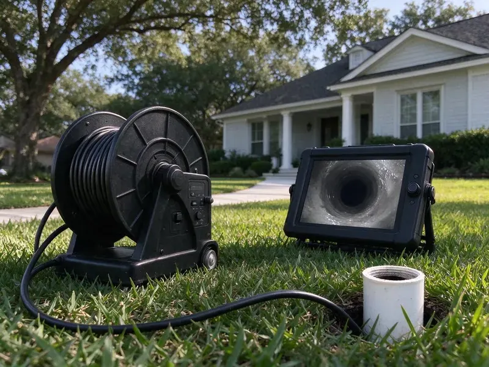

Sewer Cleaning in Sheboygan, WI
For reliable sewer cleaning in Sheboygan, WI, HKV Plumbing has the tools and expertise to get your system flowing freely again, quickly and efficiently.
- Quick Sewer Backup Response
- Satisfaction Guaranteed
- Fast, Reliable Service
- Prompt, Effective Service

Professional Sewer Cleaning Services in Sheboygan, WI.
We stop the backup first, then show you what caused it and how to prevent the next one.
Main Sewer Cleaning in Sheboygan, WI That Removes Roots and Buildup
At HKV Plumbing, we provide full-service sewer cleaning designed to tackle the toughest blockages in Sheboygan, WI. Our team uses modern equipment to clear your main sewer line, restoring proper drainage and preventing future backups.
Our expertise includes:
- Restoring full flow to main sewer lines.
- Sectional cable machines with root saws and blade cutters
- Locating and marking pipe depth for future repairs

Additional Drain Services Services in Sheboygan, WI
From stubborn kitchen clogs to main sewer backups, our drain services in Sheboygan, WI restore full flow fast and keep it that way.


Customers
Why Choose HKV Plumbing for Sewer Cleaning in Sheboygan, WI?
We do not guess about your sewer. Every main line cleaning can include a recorded camera inspection so you know whether a cleaning fixed it or a repair is needed.
- Local Expertise, HKV Plumbing knows the plumbing challenges common to Sheboygan, WI, including local soil conditions and tree species that often invade sewer lines.
- Long-Term Solutions, We do not just clear the clog, we aim to provide solutions that stop recurring problems, saving you time and money.
- Advanced Equipment, We use modern diagnostic cameras and high-pressure hydro jetting tools for precise and effective cleaning.
Citywide Coverage
We clean sewers in every neighborhood of Sheboygan, including older districts with clay and cast iron and newer tracts with PVC. Our crews know where cleanouts are typically placed in local homes and can find them quickly.
Experienced Team
Each technician at HKV Plumbing receives ongoing training on current sewer cleaning technology and techniques. This expertise means your sewer line is in good hands, with a thorough and safe cleaning process.
Safety-First Approach
All our sewer cleaning work complies with local municipal codes and environmental guidelines in Sheboygan. Our methods are designed to be safe for your home's plumbing and the surrounding environment, preventing any potential hazards.
Trusted Certified Sheboygan Plumbing Services Professionals
At HKV Plumbing, we take pride in providing certified plumbing services throughout Sheboygan, WI. Backed by leading industry credentials, our experienced plumbers combine technical skill with genuine customer care. Whether it is repair, installation, or maintenance, we follow strict safety and quality standards to deliver long-lasting results you can trust.
Call Us Now PHCC Plumbing Contractor Recognition
PHCC Plumbing Contractor Recognition Better Business Bureau (BBB) Accreditation
Better Business Bureau (BBB) Accreditation Angi Certified Pro
Angi Certified Pro ISO 9001 Quality Management Certification
ISO 9001 Quality Management CertificationThorough Sewer Cleaning Services in Sheboygan, WI
Sewer Cleanout Installation in Sheboygan
Some homes have no accessible cleanout, which forces techs to pull a toilet or go through a roof vent. We can install a two-way cleanout near the foundation so the line can be cleaned from either direction. This makes every future cleaning faster and cheaper. It also gives a clear access point for camera inspections. Cleanout installation is done to local code with any needed permit.

Root Removal From Sewer Lines in Sheboygan
Trees and shrubs send roots toward any moisture they can find, and a sewer joint is a steady source during dry months. Thirsty yard trees and shrubs are common causes in local yards. We use a sectional cable with a root saw sized to the pipe to cut the mass free and pull it out. Heavy root growth may need a follow-up with a jetter to clear fine root hairs. A camera inspection then shows where roots are entering so you can decide on lining or repair.
Clogged Main Sewer Line Solutions in Sheboygan, WI
A clogged main sewer line affects all drains in your home or business, often leading to multiple fixtures backing up at once. This severe issue requires prompt and expert attention. HKV Plumbing specializes in diagnosing and clearing main sewer line blockages in Sheboygan, WI. We use powerful augers, hydro jetters, and camera inspections to identify the obstruction, whether it is roots, debris, or a structural issue, and implement the most effective solution to restore full drainage.
Main Sewer Line Clearing in Sheboygan
The main sewer line is crucial for carrying wastewater away from your home. Blockages in this line can cause widespread backups affecting all fixtures. We use powerful augers and dedicated cutting tools to clear roots, grease, and other debris that commonly obstruct main sewer lines, especially in older homes around Sheboygan.
Emergency Sewer Backup Cleaning in Sheboygan
If sewage is coming up through a shower or floor drain, stop using water and call right away. We send a tech with a main line machine, protective gear and a wet vac. The first priority is restoring flow so wastewater can leave the house. We then help clean and sanitize the affected area. Our photos and notes can support an insurance claim.
Sewer Camera Inspections in Sheboygan, WI
Before any major sewer cleaning, especially for recurring issues, a sewer camera inspection is crucial. HKV Plumbing uses waterproof cameras to travel through your sewer lines, providing a live view of the pipe's interior. This lets us accurately locate the exact cause and position of a blockage, identify pipe damage like cracks or collapses, and choose the most effective cleaning method, saving time and preventing unnecessary digging in Sheboygan, WI.
Grease and Scale Buildup Cleaning in Sheboygan, WI
Grease from kitchens cools and coats the inside of sewer pipes, and minerals in the water bond with it to form a tough crust. Water softeners are a standard feature in many Wisconsin homes, helping protect water heaters, fixtures and appliances from scale. Over years the pipe opening shrinks until flow slows to a trickle. A cable can punch a hole through, but jetting cleans the walls back to full size. We choose the method based on pipe material and condition. Cleaning before the line fully closes saves money and stress.

Commercial Sewer Cleaning in Sheboygan, WI
Commercial properties in Sheboygan, WI often face more intense sewer system usage, leading to frequent clogs from various sources. Restaurants, for example, deal with heavy grease accumulation, while other businesses might have issues from foreign objects. HKV Plumbing provides heavy-duty commercial sewer cleaning, using hydro jetting equipment capable of clearing large diameter pipes and tough commercial-grade blockages quickly, minimizing downtime for your business.
Sewer Cleaning Near Me in Sheboygan, WI
When you search for sewer cleaning near me in Sheboygan, WI, HKV Plumbing is your trusted local expert. We are very familiar with the local infrastructure and common plumbing issues affecting homes and businesses throughout the area. Our nearby location means faster response times and a better understanding of your needs.
Our dedication to the Sheboygan community means we are always ready to respond to your sewer cleaning needs. We focus on being accessible and delivering prompt, professional service right to your doorstep.
HKV Plumbing at a Glance
- Licensed and insured plumbers serving Sheboygan, WI
- Same-day appointments and 24/7 emergency response
- Upfront, flat-rate pricing before work begins
- 4.8-star rated by 448+ Wisconsin customers
Sheboygan Map
Sheboygan Information
- Population
- 49,686
- Area codes
- 920/414/262
- Service area
- Sheboygan and communities within 40 miles
- Nearby
- Oshkosh, Milwaukee, Wauwatosa, Appleton
Older clay and cast iron sewer laterals plus root-seeking trees make main line cleaning a regular need for many homes in Sheboygan, WI.
Expert Services
Trust our professionals for reliable HKV Plumbing solutions in Sheboygan, WI.
Our Specialized Plumbing Services in Sheboygan, WI
At HKV Plumbing, we provide a complete range of plumbing services across Sheboygan, WI. From leak detection to full system installations, our team ensures fast, precise, and affordable service for both residential and commercial properties. Explore our core services below:


How Our Sewer Cleaning Process Works in Sheboygan, WI
We follow a clear, step-by-step approach to sewer cleaning, from first diagnosis to complete blockage removal, serving all of Sheboygan, WI.
Request a Quote
Call (414) 432-4641 and describe which fixtures are backing up and when it started. We give you a price range and send a tech with main line equipment.
Locate and Clear
We find your cleanout or best access point and run the correct cable or jetter. Roots and debris are cut and removed until the line flows freely.
Inspect and Report
A camera run confirms the line is clean and checks for damage. You get the findings and our advice before we leave.
Frequently Asked Questions About Sewer Cleaning in Sheboygan
Main sewer cleaning in Sheboygan typically costs $200 to $500 with a cable machine from an accessible cleanout. Hydro jetting a sewer line typically runs $400 to $900, and a camera inspection adds about $150 to $350.
In most cases the homeowner owns the lateral from the house to the city main or property line. Your city utility can tell you where its responsibility begins.
If our cleaning or camera inspection shows damage like cracks, collapses, or severe root intrusion that cleaning alone cannot resolve, HKV Plumbing will give you a detailed assessment and options for sewer line repair or replacement. We can explain trenchless repair methods, if they apply, to limit disruption to your Sheboygan property.
HKV Plumbing uses professional-grade equipment from reputable manufacturers known for their reliability and effectiveness. Our tools include RIDGID drain machines and cameras, Spartan Tool hydro jetters, and other well-known brands to deliver the best possible sewer cleaning results in Sheboygan, WI.
Most standard sewer cleaning jobs can be completed within 1 to 3 hours. However, more severe blockages, such as those caused by extensive tree roots or significant pipe damage, may require more time and possibly additional services.
We use industry-leading equipment from trusted brands like Spartan Tool, RIDGID, and Gorlitz for our sewer cleaning work. These brands are known for their durability and effectiveness in tackling tough blockages.
For most homes in Sheboygan, an annual or twice-yearly sewer cleaning is sufficient for preventative maintenance, especially if you have older pipes or mature trees nearby. If you have frequent clogs, more regular cleaning might be necessary. Your plumber can suggest a schedule based on your situation.
While minor drain clogs can sometimes be handled with DIY solutions, main sewer line blockages need professional tools and expertise. Trying to clear a sewer line without proper equipment can aggravate the problem or damage your pipes.
What People Are Saying About Our Plumbing Experts?

Daniel K.
A pipe burst at 11 pm and they actually answered. The plumber showed up within the hour, shut everything down, and had us back to normal the next morning. Could not ask for more.
Emergency Plumbing · Green Bay, WI
Mark T.
When our office needed drain cleaning, HKV Plumbing provided quick, reliable service. The plumber arrived on time and made sure every drain flowed perfectly before leaving. Very satisfied.
Drain Cleaning · Sheboygan, WI
Sofia M.
Two new toilets installed in one visit, no mess left behind, and the tech even adjusted a faucet he noticed was dripping. Fair pricing and really friendly.
Toilet Installation · West Allis, WILaura S.
I scheduled a water heater replacement, and the team made the process smooth and affordable. The new unit works perfectly, and they cleaned up after completing the job.
Water Heater Replacement · Wauwatosa, WI
Robert G.
The trenchless sewer replacement saved our front yard. They walked us through the camera inspection footage first so we knew exactly what we were paying for.
Sewer Line Replacement · Wauwatosa, WIJames P.
Our commercial plumbing system had a leak under the sink, and HKV Plumbing handled it professionally. The plumbers arrived quickly and restored everything without disruption to our customers.
Commercial Plumbing · West Allis, WI